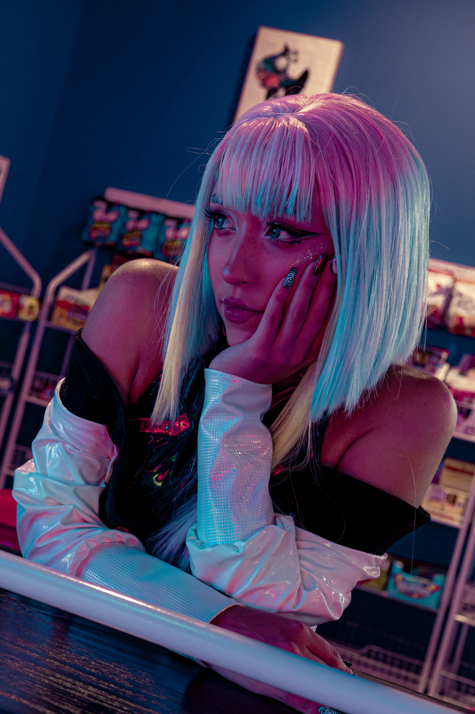
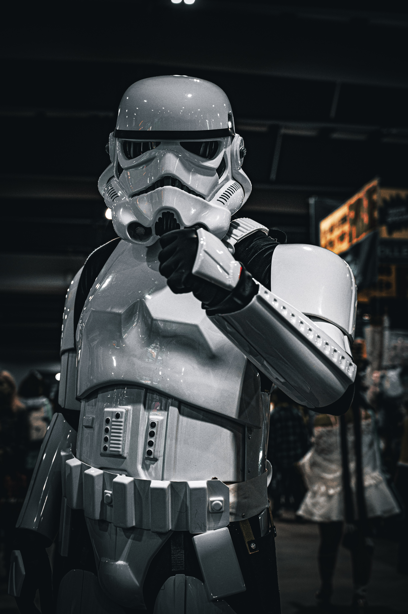
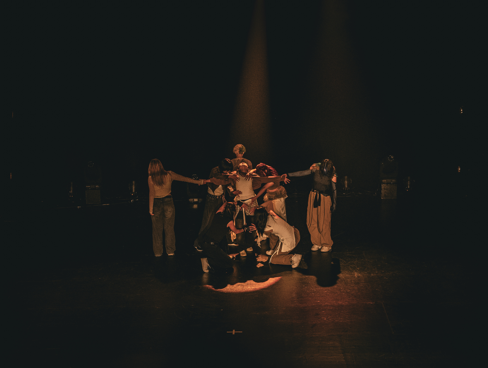
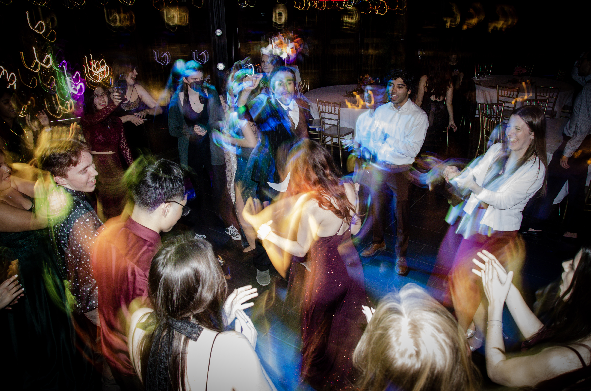

Welcome to a little snip it of my photography
portfolio for my webpage.
Lucy

This is a photo that I took fairly recently
and it has easily and quickly risen to one of my
favorites. The subject of this photo was someone
I met at comic-con earlier this month in the same
costume. I had gotten only managed to get a couple good
photos at the convention so we agreed to meet again
and take some more photos where I managed to get this.
stormtropper

I also took this picture at comic-con,
and while I also think of this as a good photo
due to the lighting and edits I was able to make to it,
I am also a very big star wars fan so taking this picture was amazing for me.
Dance Team

This photo also holds some value for me.
Early in my photogrpahy journey I was lucky enough
to meet a dance crew based on in ottawa. I had managed
to catch them practicing out in public and asked them if
they wanted some photos. To my surprise they agreed, and
since then I've been their photograhper. This photo in
particular was taken at a competition the dance team
attended in Montreal where they managed to get first place.
I managed to get this photo during their preformance.
Party

A reason as to why this photo is one of my
favorites is because in all honesty I managed to
get this by some stroke of luck. Everyone was
having a blast on the dance floor and I knew
I had to get some kind of photo and up until then
I had seen a lot of people on social media doing
something called light/shutter drags. Where you
intentially lower your shutter speed to get the
light affect you see in the photo. The reason I say
this was luck is because I had never tried this prior
and it managed to work.
Why I do photography
Why do I do photography? This is a question
I get asked a lot so I thought I would answer it
here. Ever since I was young my dad, at the time,
had this really nice camera that he would always bring
with him whenever we went on family trips, and ever since
then I've always tried my best to mess around with and learn more.
When I finally got my own camera I went to town
on learning the ins and outs of it.